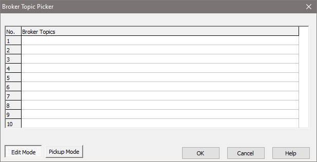

Topic: CL273

| MQTT Broker Topic Picker |
Topic: CL273
|
A total of 50 MQTT Broker Topics can be defined. Each list is shared between Subscribers and Publishers on each port. The Broker Topic Picker is used to both create and select the Topics.

Pickup Mode: Used to select a Topic for a Subscriber or Publisher. Click a Topic to select it, then click OK to return to the previous dialog. The Topics must first be created using Edit Mode.
Edit Mode: With Edit Mode selected, click on any cell in the Broker Topics column to edit its text. A Topic in general is a simple string of 1 to 128 characters. When creating Topics, follow a few simple guidelines:
After entering Topic names, click OK to return to Pickup Mode.